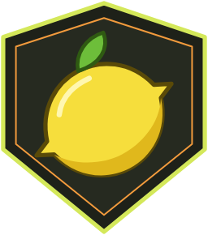

Политика конфиденциальности / Privacy Policy
Обновлено: 21 октября 2026 · Updated: October 21, 2026
Кто мы / Who we are
Сайт limarust.github.io, Discord-сервер и игровой сервер Rust «Lima Rust» ведёт администрация проекта Lima Rust (частный проект сообщества). Связаться с нами можно через тикет в Discord (канал «создать-тикет»).
The website, the Discord server and the Rust game server “Lima Rust” are run by the Lima Rust project team (a private community project). Contact us through a ticket in our Discord (channel “create ticket”).
Какие данные мы получаем / What we collect
Вход через Steam: SteamID64, публичное имя и аватар профиля. Вход идёт по протоколу OpenID на steamcommunity.com: пароль вводится только на сайте Steam, мы его не видим. Ключ Steam Web API для этого не нужен.
Вход через Google: идентификатор аккаунта Google, имя и адрес электронной почты. Они нужны только для входа, личного кабинета и (если ты включишь) уведомлений.
Привязка Discord: идентификатор и отображаемое имя пользователя Discord, если ты сам привязал аккаунт командой /link и /discord.
Игровые данные: время на сервере, убийства и смерти, открытые ящики, число построенных конструкций, ранг, привилегия, время перезарядки китов. Сообщения игрового чата сохраняются для модерации в закрытых каналах администрации Discord.
Технические данные: Cloudflare и GitHub Pages обрабатывают IP-адрес и сведения о запросе, чтобы отдавать сайт и защищать его от злоупотреблений. Игровой сервер видит IP-адрес игрока при подключении.
Steam login: SteamID64, public profile name and avatar. Sign-in uses OpenID on steamcommunity.com; your password is entered only on Steam and never reaches us.
Google login: Google account ID, name and e-mail address, used only for sign-in, your account page and (if you enable them) notifications.
Discord link: your Discord user ID and display name, only if you link the account yourself.
Game data: playtime, kills and deaths, opened crates, number of built structures, rank, privilege, kit cooldowns. In-game chat is logged for moderation in staff-only Discord channels.
Technical data: Cloudflare and GitHub Pages process IP addresses and request details to serve and protect the site. The game server sees a player’s IP when they connect.
Как мы используем данные / How we use it
Для входа, личного кабинета, рангов, китов, привилегий, топа игроков, ролей в Discord, модерации и защиты сервера от читеров. Мы не продаём данные, не показываем рекламу и не используем их для профилирования.
Данные Google используются только для входа и показа твоего кабинета. Мы не передаём их третьим лицам, не используем для рекламы и не даём людям читать их, кроме администрации в случаях, необходимых для поддержки. Использование соответствует Политике данных пользователей в сервисах API Google, включая требования Limited Use.
For sign-in, your account page, ranks, kits, privileges, the leaderboard, Discord roles, moderation and cheat protection. We do not sell data, show ads or profile users.
Google user data is used only to sign you in and show your account page. It is not shared with third parties, not used for advertising and not read by people except staff when needed for support. This follows the Google API Services User Data Policy, including the Limited Use requirements.
Где хранятся данные и кому передаются / Storage and sharing
Сайт размещён на GitHub Pages, серверная часть и база данных работают на Cloudflare (Workers и D1), игровые данные хранятся на игровом сервере и в Discord. Эти сервисы выступают обработчиками данных. Мы не передаём данные иным третьим лицам, кроме случаев, когда этого требует закон.
The site is hosted on GitHub Pages, the backend and database run on Cloudflare (Workers and D1), game data lives on the game server and in Discord. These services act as processors. We share data with no one else unless the law requires it.
Файлы cookie и память браузера / Cookies and browser storage
Мы не используем рекламные и аналитические cookie. В памяти браузера (localStorage) хранятся только необходимые вещи: токен входа, выбранный язык и настройки сайта. Ты можешь очистить их в настройках браузера или выйти из аккаунта.
We use no advertising or analytics cookies. Only necessary items are kept in your browser storage (localStorage): your sign-in token, language and site settings. You can clear them in your browser or by signing out.
Сроки хранения и твои права / Retention and your rights
Данные хранятся, пока ты играешь и пользуешься сайтом. Ты вправе запросить доступ к своим данным, исправление или удаление, ограничить обработку и возразить против неё. Напиши тикет в Discord, мы ответим в разумный срок. Ты также можешь подать жалобу в надзорный орган, в Словакии это Úrad na ochranu osobných údajov SR. Отвязать Discord можно командой /unlink.
We keep data while you play and use the site. You may request access, correction or deletion, restrict or object to processing. Open a ticket in Discord and we will answer within a reasonable time. You can also complain to a supervisory authority (in Slovakia: Úrad na ochranu osobných údajov SR). You can unlink Discord with /unlink.
Возраст / Age
Сервис предназначен для людей, которым Steam и Discord разрешают создавать аккаунт (от 13 лет). Если ты младше, получи согласие родителей.
The service is for people old enough to hold Steam and Discord accounts (13+). If you are younger, get a parent’s consent.
Изменения / Changes
Мы можем обновлять эту политику. Актуальная версия всегда по адресу limarust.github.io/privacy.html, дата обновления указана вверху.
We may update this policy. The current version is always at limarust.github.io/privacy.html with the update date at the top.
Lima Rust is an independent community project. It is not affiliated with, endorsed by or sponsored by Facepunch Studios, Valve Corporation, Discord Inc. or Google LLC. Rust is a trademark of Facepunch Studios; Steam is a trademark of Valve Corporation; Discord is a trademark of Discord Inc.; Google is a trademark of Google LLC.